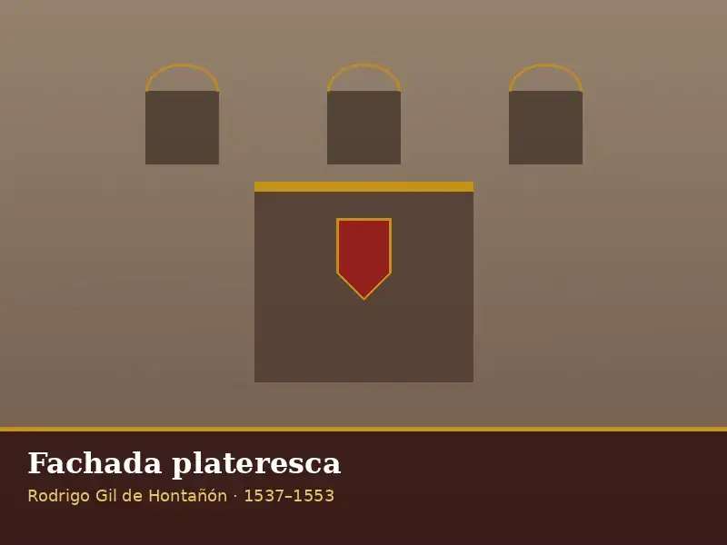
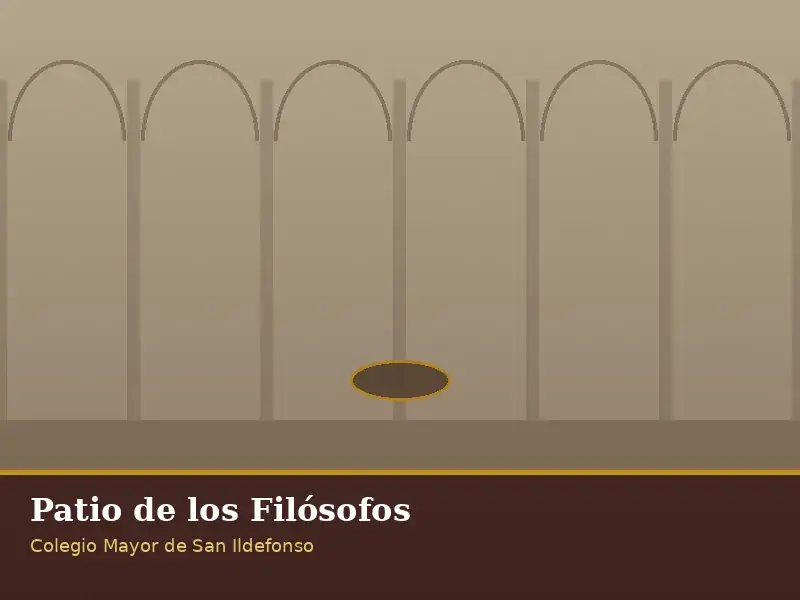
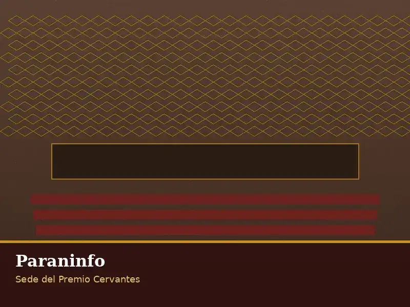
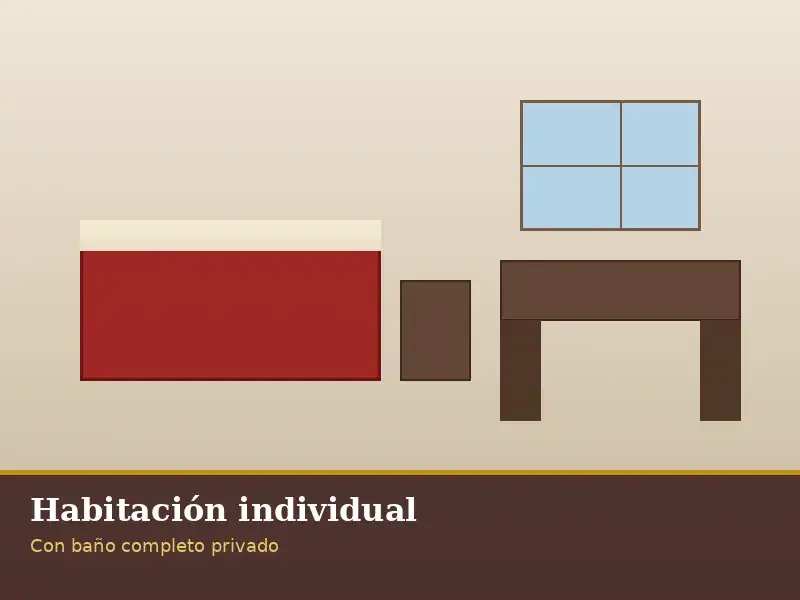
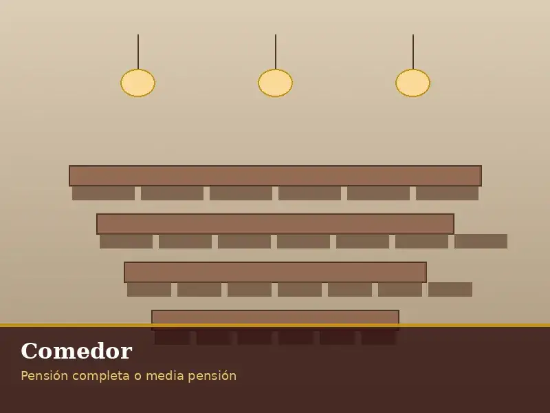
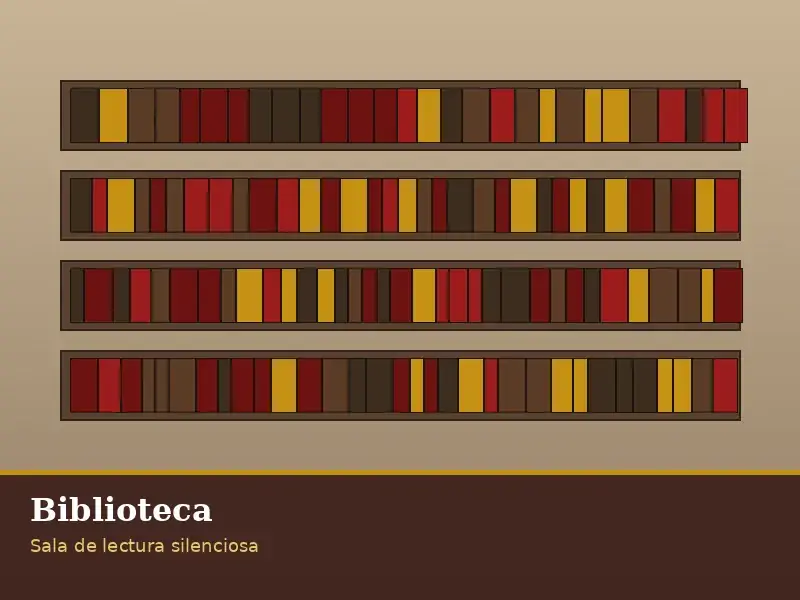

Habitaciones
41 habitaciones individuales y dobles con baño completo privado.
Más de cinco siglos de vocación universitaria en el Colegio Mayor de San Ildefonso, Alcalá de Henares.
La Residencia San Ildefonso se aloja en el Colegio Mayor de San Ildefonso, fundado en 1499 por el cardenal Francisco Jiménez de Cisneros con autorización del papa Alejandro VI. La primera piedra se colocó el 14 de marzo de 1500 y el edificio se inauguró el 26 de julio de 1508 con la llegada de los siete primeros colegiales procedentes de Salamanca.
Su célebre fachada plateresca, obra de Rodrigo Gil de Hontañón (1537–1553), fue concebida como un gran retablo de piedra y es una de las imágenes más reconocibles de la ciudad. En su interior se conservan los patios de Santo Tomás de Villanueva, de los Filósofos y Trilingüe, así como el Paraninfo, sede de la entrega anual del Premio Cervantes.
El conjunto está declarado Patrimonio de la Humanidad por la UNESCO desde 1998. La Residencia ocupa un edificio independiente situado en el Patio de los Filósofos, dentro de la manzana cisneriana.
La Residencia dispone de espacios diseñados para el estudio, el descanso y la vida social, integrados en un edificio histórico.
41 habitaciones individuales y dobles con baño completo privado.
Comedor propio con desayuno, comida y cena en cocina propia.
Sala de lectura silenciosa para uso exclusivo de residentes.
Espacios reservados para el trabajo individual o en grupo.
Acceso al Patio de los Filósofos y zonas comunes del Colegio.
Servicio de lavandería incluido en el precio del alojamiento.
Fotografías del Colegio Mayor de San Ildefonso y la Universidad de Alcalá. Imágenes bajo licencia Creative Commons (Wikimedia Commons).






.JPG?width=800)

Las imágenes de habitaciones, comedor y biblioteca son representaciones provisionales; las del Colegio Mayor proceden de Wikimedia Commons (Creative Commons). Todas se sustituirán por material propio o cedido por la FGUA y UAH tras la sesión fotográfica.
La Residencia San Ildefonso es uno de los alojamientos gestionados por CRUSA (Ciudad Residencial Universitaria, S.A.), la sociedad de la Universidad de Alcalá para el alojamiento de estudiantes y visitantes.
Alojamiento universitario en el casco histórico de Alcalá, en el propio Colegio Mayor de San Ildefonso.
Ver ResidenciaMás de 140 viviendas con habitaciones individuales y dobles, zonas deportivas y comunes, junto al campus de la UAH.
Visitar crusa.esHospedería universitaria en Sigüenza (Guadalajara), restauración de un palacete barroco con cafetería y centro de convenciones.
Visitar portacoeli.esConcierta una visita guiada y descubre la Residencia y su entorno histórico.